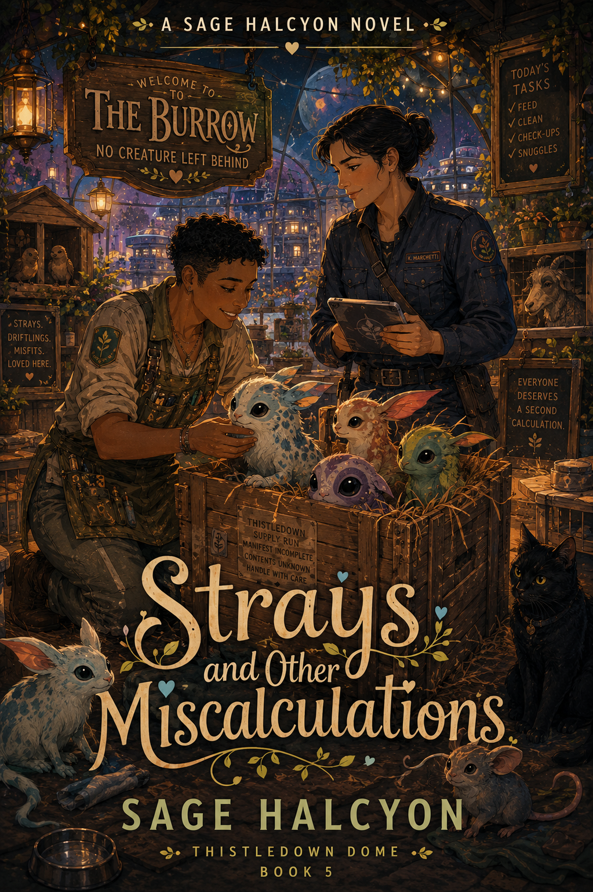

Cozy space romance
Ships, settlements, orbital views, greenhouse work, coffee shops, and emotional stakes that matter without requiring the universe to end first.
The series
A small domed settlement, a whole lot of seedlings, and love stories about people learning that staying can be its own kind of bravery.
Welcome to the dome
Thistledown sits at the edge of nowhere, far enough from old lives to make room for new ones. The series follows the growers, repair crews, station arrivals, coffee shop regulars, and quiet stubborn people who keep the dome alive.
Each book stands alone as a complete romance, but the town keeps changing around them: more roots, more repairs, more coffee, more reasons to stay.
For readers who want science fiction with softness, competence, tenderness, and the sense that the future might still have warm windows.
Ships, settlements, orbital views, greenhouse work, coffee shops, and emotional stakes that matter without requiring the universe to end first.
Each book centers a new couple and offers a complete romantic arc, while Thistledown itself grows book by book.
Expect found family, practical caretaking, gentle humor, slow trust, and endings that leave the lights on.
Begin with Book 1 if you want the fullest sense of the dome, or follow whichever cover calls you home.
The current shelf, with more arrivals planned as the settlement keeps growing.

A slow-burn sci-fi romance about second chances, found family, and learning that safety can look like soil under your nails instead of a mapped-out exit.

A cozy science fiction romance about permission to be ordinary, the difference between fixing a place and belonging to it, and what it costs to finally stop leaving.

A slow-burn romance set in The Long Steep, Thistledown's only coffee shop, where warmth is something you choose to make.

An archivist, a salvage hauler, a water-damaged crate, and the question of whether the truth is worth enough to stay for.

A cargo error, a crate of unidentified off-world creatures, one courier mistake, and the question of whether fixing the mess means staying for the people caught inside it.